叢林咖啡 · iryo · Barceló · La Mi Venta · 巨人 · Chotis · 青蛙 · 皇宮 · Almudena
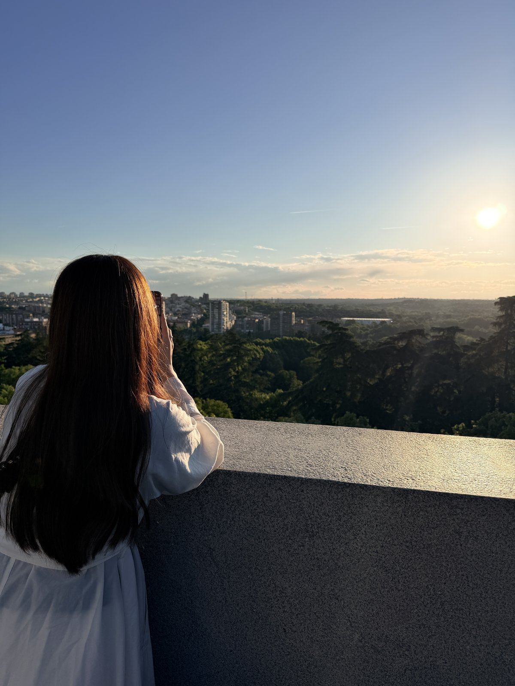
馬德里黃金時刻 · 海拔 667 公尺的歐洲最高首都
Day 3 完美收尾,Gaudí 五大全收集。
Day 4 沒有要在巴塞繼續逛 —— 早上 check-out、火車到馬德里。
但是離開前,還有一頓重要的早午餐要吃。
§ One退房前找了一間滿牆綠植的咖啡館,整面葉子瀑布 + 紅鶴 + 樹幹造型 + 藤編椅 —— 走進去像走進都市叢林。中央矗立一隻接近天花板的長頸鹿雕像,從吧台後面探出長脖子,氣場全開。
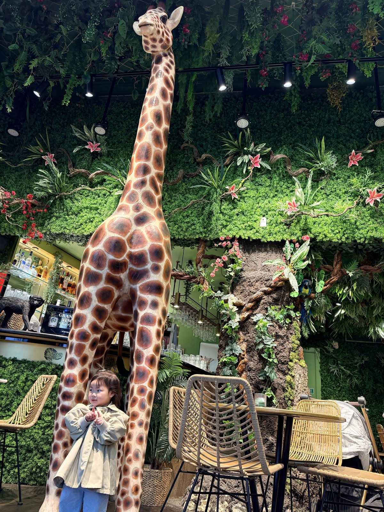
1 歲 11 個月 vs 三米長頸鹿 · 雙手合十的小動作太可愛
小米的反應: 站在長頸鹿腳邊,雙手合十、認真抬頭看 ——
「媽媽你看這個好高」的小驚嘆。
巴塞最後一張照片,被她抓到主角了。
媽媽點了一杯焦糖餅乾拿鐵:玻璃杯 + 滿滿鮮奶油 + 焦糖醬 + Lotus 餅乾插旗,上桌就先讓人嘟嘴 ——「這個甜度⋯⋯OK 嗎」😅
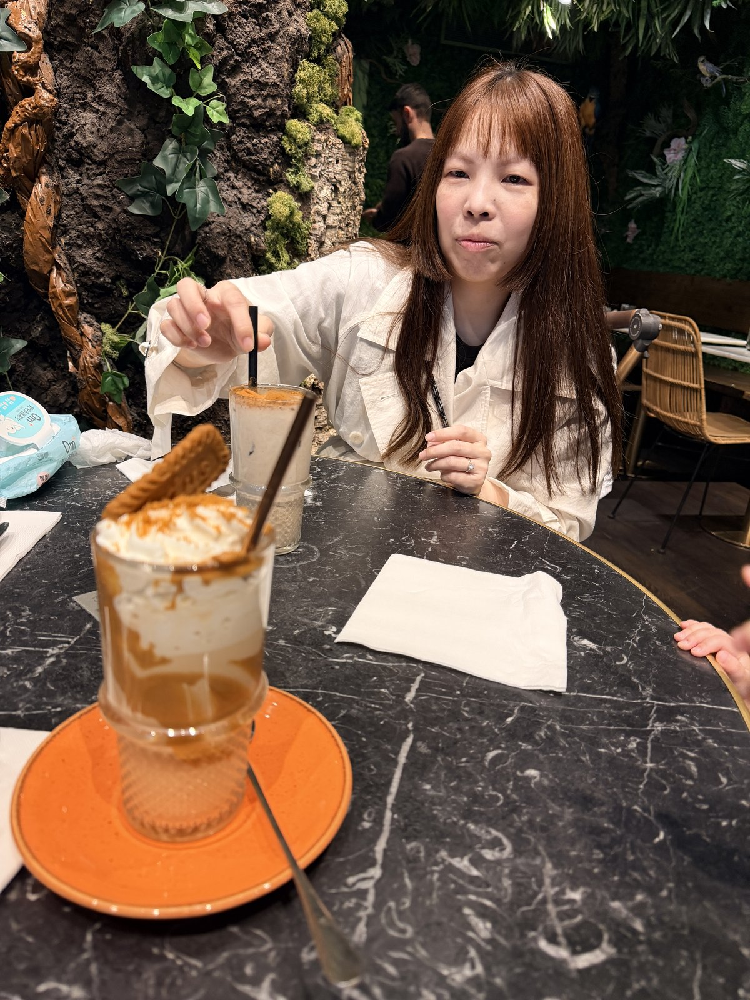
Lotus Biscoff 拿鐵 · 媽媽試喝中的嘟嘴表情
主餐是酪梨班尼迪克蛋 + 紫羅蘭可食用花 + 藍色醬汁 + 烤馬鈴薯——擺盤豪華到像美術館展品。
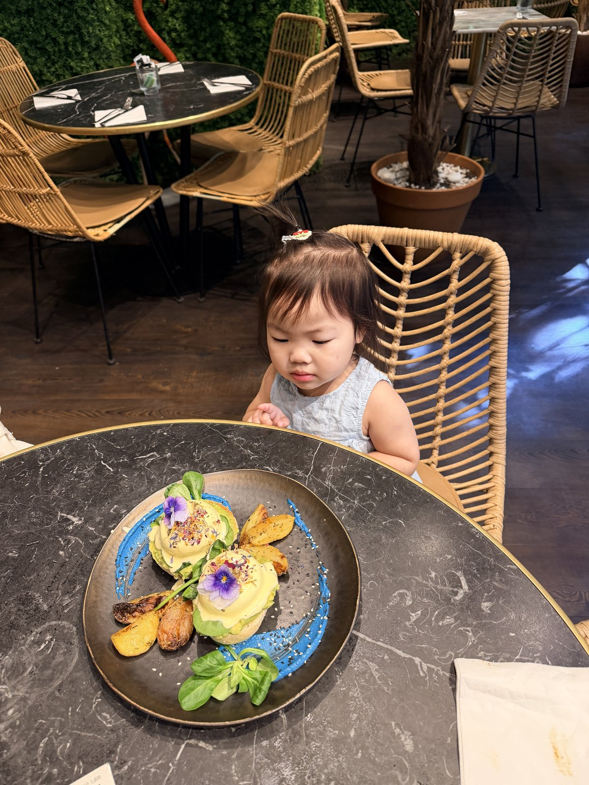
藍色醬汁 + 紫羅蘭花 + 烤馬鈴薯 · 小米從藤椅後面探頭研究
§ TwoDay 2 的酪梨陰影: 「酪梨澱粉組合」這個詞,從第二天起變成這趟旅程的內部笑話。
Day 4 早午餐 ——
又是酪梨,又是澱粉。
陰影沒解除,只是換了一間更厲害的店 😂
收行李、退房、推車、抱小米、過安檢 —— 出國帶娃版的「機場奇幻漂流」上演完,終於坐進 Barcelona Sants 的月台。
今天的座駕:iryo —— 西班牙的私營高鐵,2022 年才開通,紅黑配色 + Frecciarossa 1000 車體,跟 Renfe 的 AVE 在同一條 LAV 高速線上對打。最高 350 km/h,Sants → Atocha 大概 2 小時 30 分搞定 600 公里。
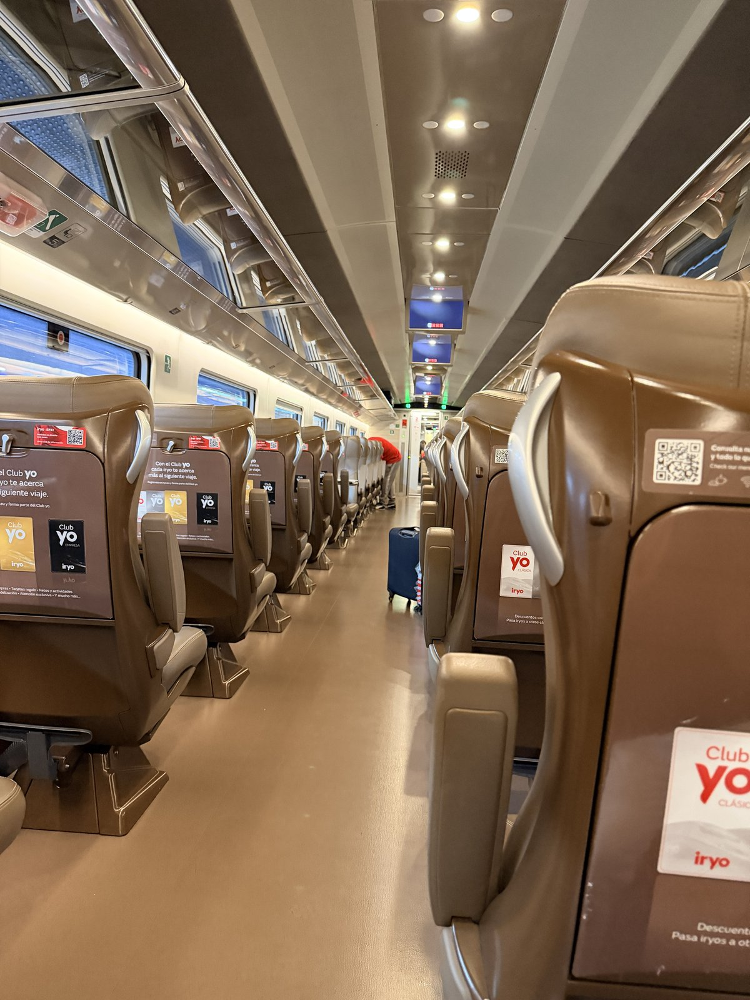
棕色座椅 + Club YO 標籤 · 頭頂行李架透明設計
訂票時做了一個育兒旅人才懂的決定 —— 故意買 2 車的位子。
iryo 的 2 號車廂是「行李車」(coche con espacio equipaje),車廂中央有一整排大型行李架 —— 28 吋行李箱可以直接卡進去、不用塞頭頂、不用搶座位旁邊的小縫。
帶娃出門的隱藏攻略
一家三口 + 嬰兒推車 + 兩個大行李 + 一個登機箱 + 媽媽包 ——
普通車廂塞不下、走道擋路、推車卡死。
2 車多花一點錢,省下整段車程的焦慮值 ✅
火車駛入第一個隧道,氣壓變化 —— 小米一手摸耳朵、回頭看媽媽。媽媽也下意識做一樣的動作安慰她。
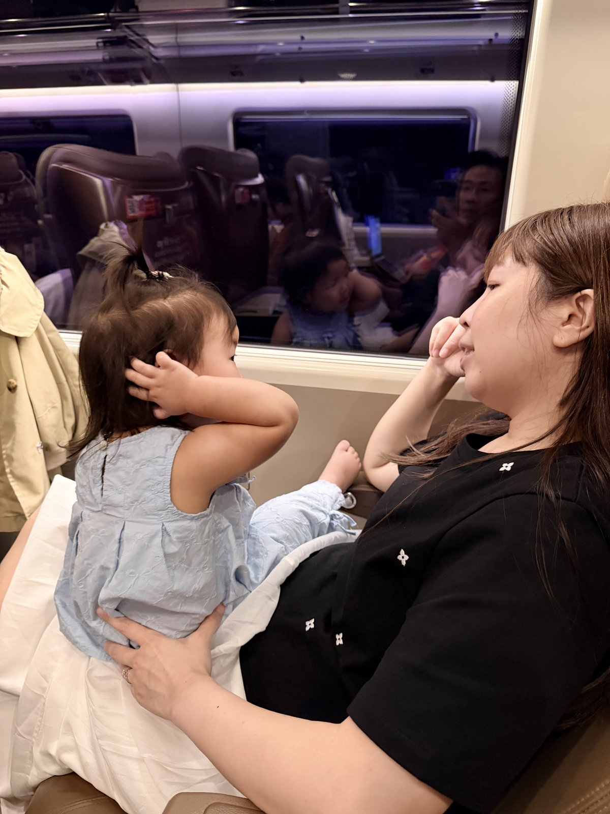
紫光 · 隧道倒影 · 同步摸耳朵母女組
沒有講好,但兩個人完美同步。
這就是被刻在 DNA 裡的母女默契。
出隧道後,窗外是一望無際的西班牙中部平原 —— 藍天、白雲、麥田、橄欖樹。火車穩穩地以 300 公里時速滑過,車廂幾乎沒有晃動,只有空調的低頻嗡嗡聲。
小米整個人趴在小桌板上睡死,藍色洋裝皺成一團;媽媽在旁邊滑手機顧場。
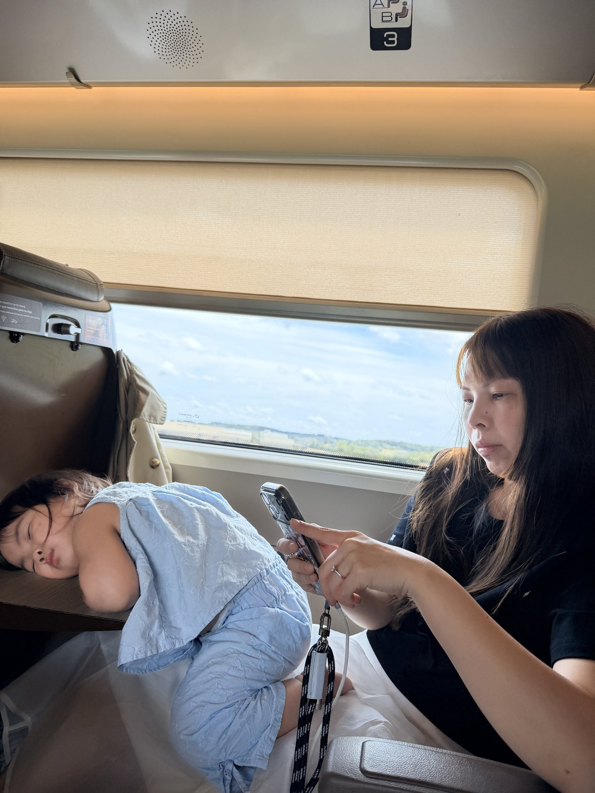
窗外平原 + 趴桌板熟睡 · 媽媽的單手育兒術
阿米手裡是一本繁體中文小說 —— 泥人、葛斯納、布拉格、神祕力量 —— 看起來是歐洲懸疑類型,趁小米熟睡的兩個小時,難得的個人時光。
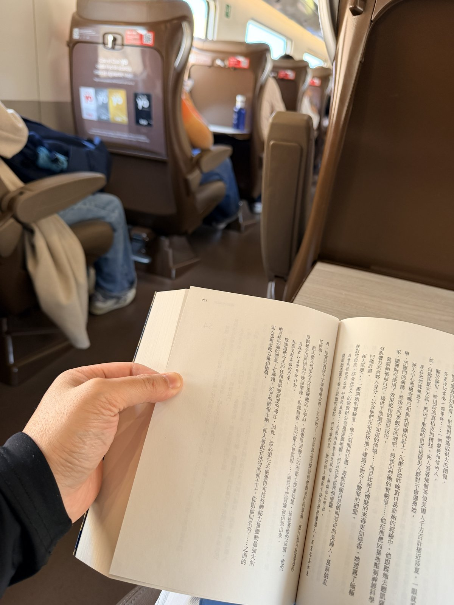
繁體中文小說 + iryo 走道 · 爸爸的安靜兩小時
§ Three這就是好火車的價值:
飛機要穿脫鞋、機艙乾燥、起降緊張;
高鐵市區到市區、座位寬、推車不用收、隨時可上廁所、看書喝咖啡睡覺都行。
帶娃跨城,火車永遠贏。
下車地點 Atocha 是馬德里的玻璃溫室火車站(站內真的有熱帶植物園),搭計程車 15 分鐘到飯店 —— Barceló Torre de Madrid,Plaza de España 廣場旁、唐吉訶德雕像對面。
Check-in 時櫃台說:「為您升級了房型 ✨」
進房一看 —— ⋯⋯好像沒感覺? 😂
「升級」的標準解讀:
「面積多 2 平方米」
「窗戶多 5 公分」
「衣櫃多一個」
反正就是心意收下,場景沒變。
但能升級總比沒升級好,謝謝櫃台的好意 🙏
放完行李下樓散步,發現大廳本身才是主秀。整個 lobby 走 Jaime Hayón 設計師風 —— 鵝黃色大地毯、藍絨布沙發、Fritz Hansen Fri 椅、粉紅單椅、超大鬥牛士肖像。飯店本身就是一座當代設計博物館。
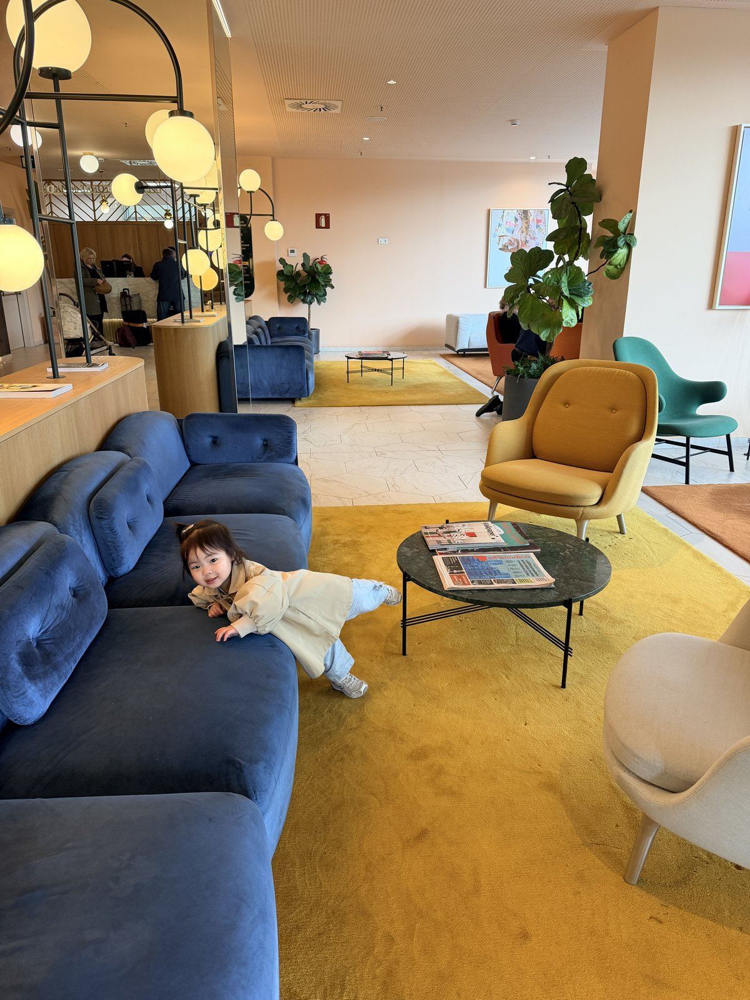
藍絨布沙發 + 鵝黃地毯 · 「媽媽你看我多會爬」
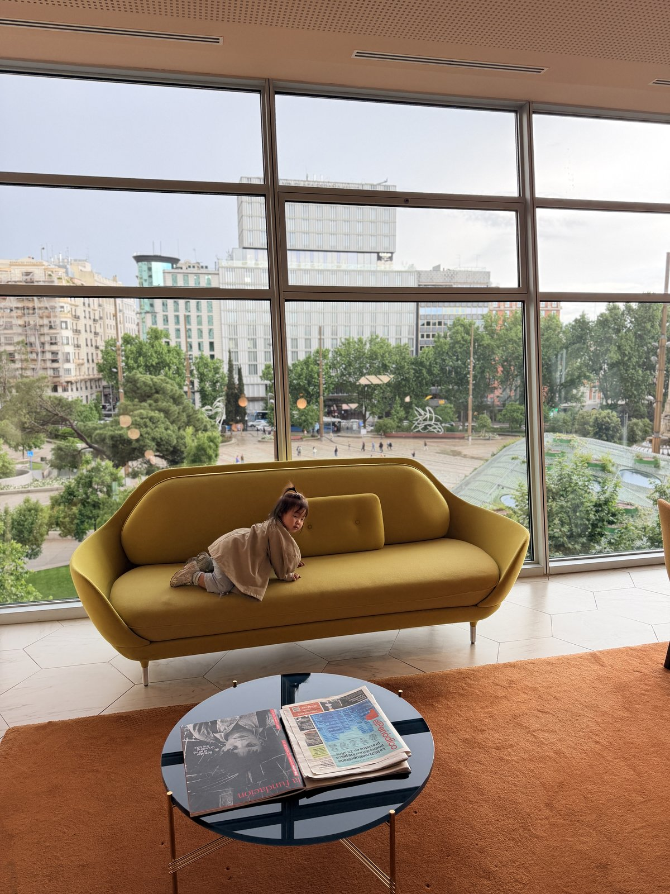
北歐家具型錄等級的午後 · 落地窗外是西班牙廣場
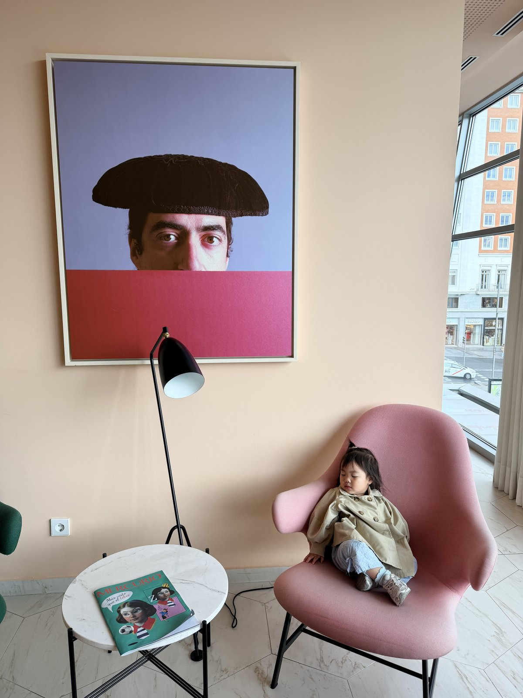
鬥牛士肖像 + 粉紅單椅 · 累壞的小公主
§ Four小米的能量曲線:
早上叢林咖啡館 ✅ 滿電
iryo 火車上 ✅ 趴桌睡兩小時
飯店大廳探險 → 再次耗盡 🔋
米色風衣 + 小白鞋 + 腳交疊 + 在粉紅椅上熟睡 ——
像一位累壞的小公主在等下午茶 👑
休息一下、洗個澡、餵完小米,傍晚 7 點出門找晚餐。從飯店出發走 4 分鐘就到 —— La Mi Venta,1962 年開業的老字號,藏在 Plaza de la Marina Española 旁邊的小路上。
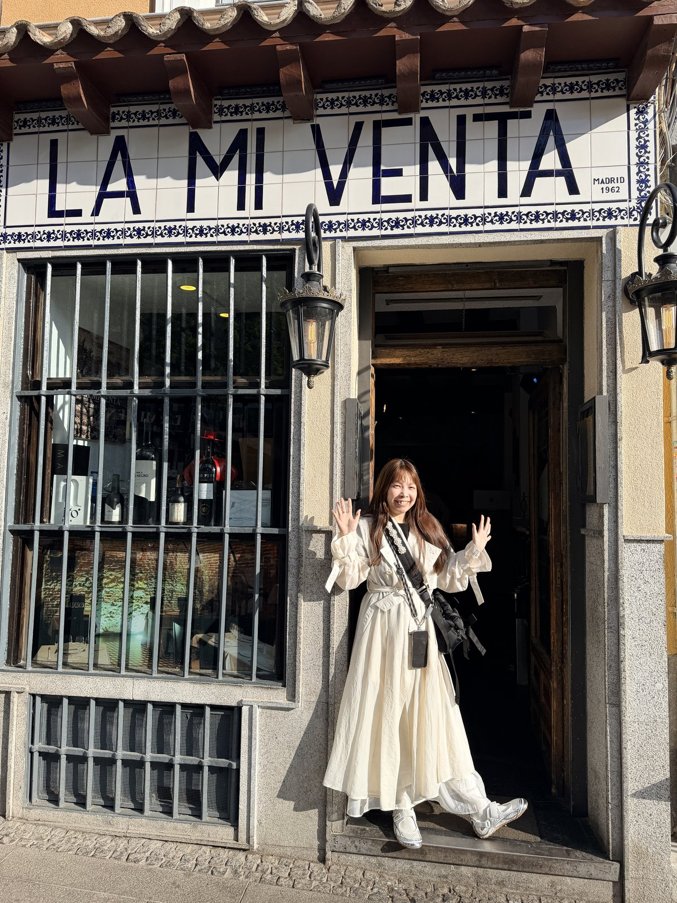
MADRID 1962 藍色磁磚招牌 · 媽媽白洋裝立正合照
正門上的「LA MI VENTA · MADRID 1962」藍白磁磚招牌、鐵窗格、紅酒展示櫃、復古吊燈 —— 這是一家還沒進門就先愛上的店。
進門最先看到的是炭烤台,玻璃後面整排厚切肋眼(Entrecot)正在炭火上滋滋作響,旁邊還有 T-bone 跟豬里肌備料。
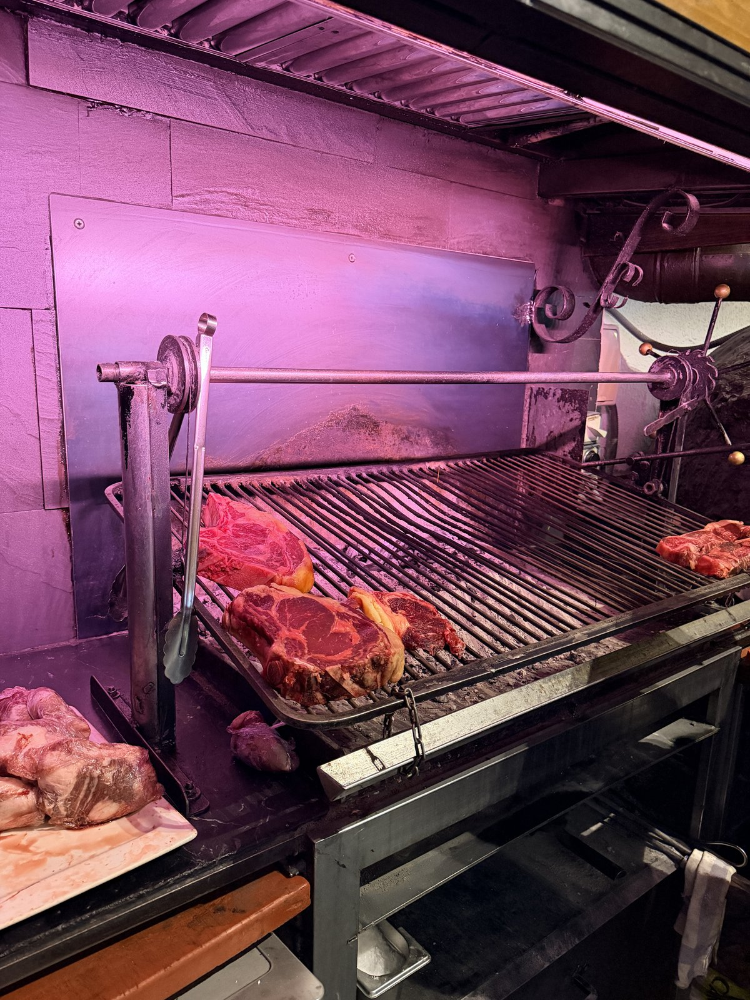
紫光烤台 + 厚切肋眼正在燒 · 肉控的天堂
往內走,整面牆吊滿 Jamón de Autor · Bellota 100% Ibérico —— 頂級的「橡實餵養純種伊比利火腿」,藍色標籤代表黑標等級。底下有專業切片台,師傅用長刀手切薄片,粉紅色油花漂亮到像藝術品。
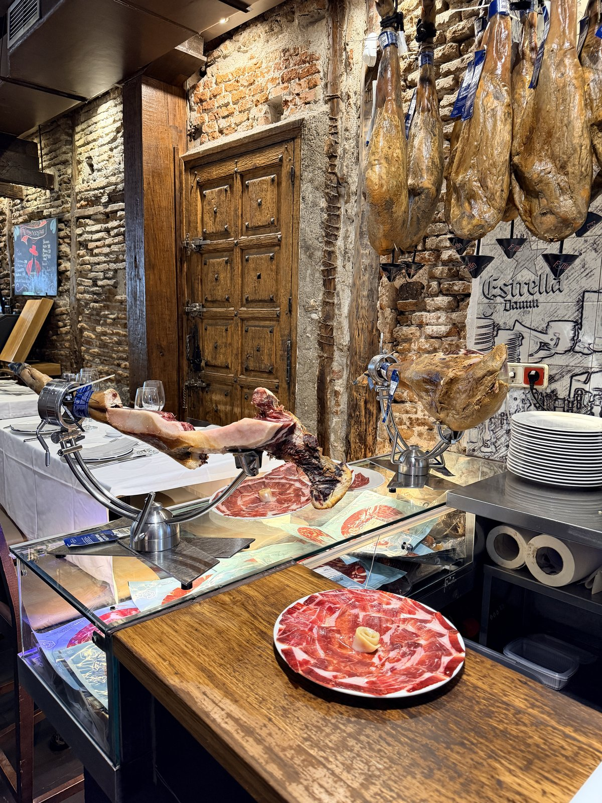
整面 Jamón de Autor · 100% Ibérico Bellota
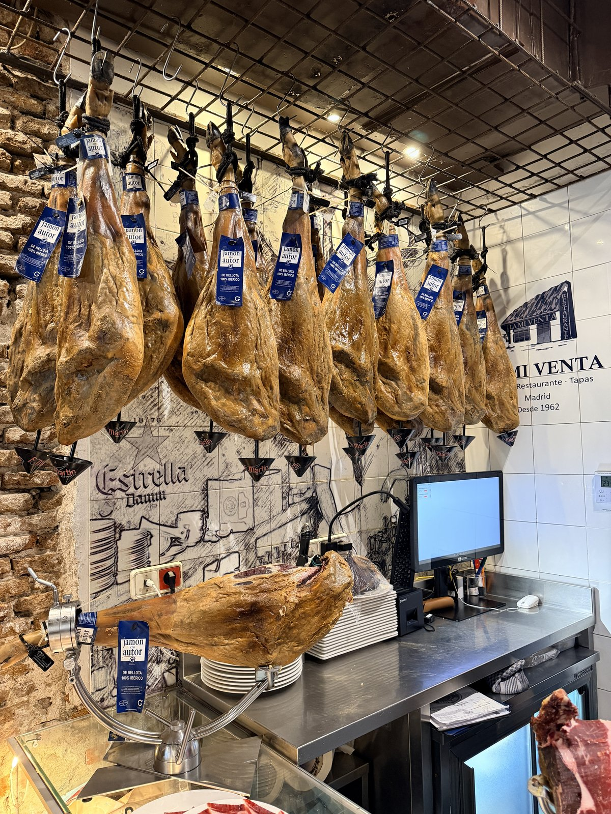
粉紅油花 + 切片儀式 · 馬德里第一盤
| 品項 | 西文 | 重點 |
|---|---|---|
| 肋眼牛排 | Entrecot | 主菜 · 帶骨 |
| 鱈魚 | Bacalao | 軟嫩 · 小米可吃 |
| 伊比利火腿拼盤 | Jamón Ibérico | 100% Bellota 黑標 |
| 烤蔬菜 | Verduras a la parrilla | 解膩 |
| 麵包 + 橄欖油 | Pan + Aceite | 小米的好朋友 |
| 桑格利亞 | Sangría | 一壺 · 比例完美 |
吃完上帳單 —— 比預期超出一個量級。
事後檢查:Jamón de Autor Bellota 100% Ibérico 一盤 €30–40 起跳,加上厚切 chuletón 等級的肋眼一份 €40–50,全店最貴的兩個招牌一起點 = 帳單刺客。
§ Five馬德里第一頓的反思:
「貴一點但好吃」 > 「便宜但踩雷」
1962 年開業的老字號 + 自家炭烤台 + 整套伊比利火腿吊架展示 ——
這種錢花得值得記住一輩子 ✅
Day 4 該有的開場,沒有比這更對的選擇。
吃完飯不到 8 點,馬德里 5 月的天空還亮著。走出 La Mi Venta,本來只是想隨意散步消化一下,沒想到——整條 Calle Mayor 都在開派對。
原來,5/15 是馬德里的主保聖人 San Isidro Labrador 紀念日,整個 5 月第二週起,舊城區會有連串的傳統慶典熱身。我們 5/8 抵達,完全是沒有計畫卻撞上最對的時間。
第一站走到 Plaza de la Villa(舊市政廳廣場),陽台掛滿馬德里市徽布幔(紅金底 + 王冠),廣場前架起音響台,前方一字排開 6 尊接近 4 公尺高的巨人玩偶——這就是西班牙北部 + 中部的招牌傳統 Gigantes y Cabezudos(巨人與大頭娃娃)。
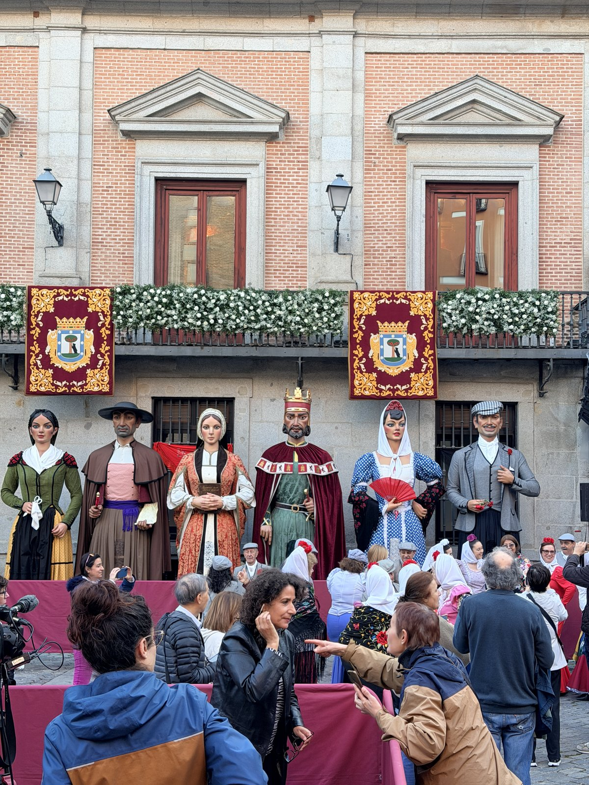
Plaza de la Villa · 馬德里市徽布幔 + 6 尊巨人
仔細認:從左到右——
👗 Manola(綠衣黃裙,手拿剪刀)
🎩 Chulapo 大叔(咖啡披風 + 黑帽,氣派抽雪茄)
👑 Reina Isabel(紅金長袍,卡斯提亞女王)
⚜️ Rey Alfonso(綠袍紅披風 + 金冠,披風上是卡斯提亞獅子)
💃 Chulapa(藍底白點 + 紅扇 + 白頭巾,馬德里靈魂女性)
🌹 Chulapo(灰西裝 + 格紋帽 + 紅康乃馨,時尚馬德里男)
巨人怎麼運作?
每尊巨人裡面都藏一個人,把整尊扛在身上邊走邊轉圈跳舞,像穿了一套 4 公尺高的戲服 😂
遊行時樂隊在前、巨人在後,跟著鼓聲轉啊轉——
每個西班牙城市都有自己的巨人家族,馬德里這幾尊就代表這座城市的歷史與靈魂。
沿著 Calle Mayor 繼續走,撞見更熱鬧的場面:整條街被警察圍起來、攤販關門、馬路中央一群穿傳統服飾的舞者正在跳馬德里的靈魂舞蹈 —— Chotis。
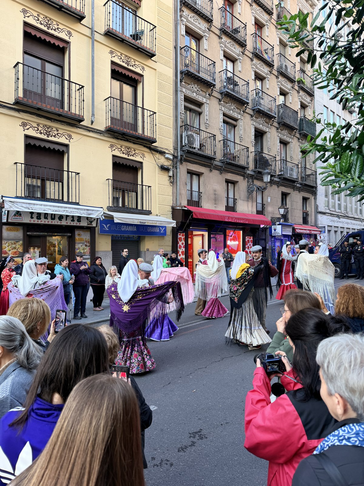
紫色披肩轉圈 + 路人圍觀 + 警車後方戒護
女舞者(Chulapas)穿著:
✦ Mantón de Manila(馬尼拉繡花披肩)—— 紫色、粉色、米白條紋繡花、長流蘇,每條都是手工繡的,單條價值幾百到上千歐元 💰
✦ 白色頭巾 + 紅康乃馨(San Isidro 的標誌花)
✦ 長花裙 + 緊身上衣
男舞者(Chulapos)穿:鴨舌帽 + 白襯衫 + 背心 + 紅領巾。
Chotis 的靈魂規則:
「El chotis se baila en una baldosa」 —— Chotis 是在一塊磚上跳的
男生站在一塊瓷磚上,腳不能離開,只能原地轉、原地踏;
女生繞著男生跳、揮舞披肩。
馬德里玩笑話:「真正的馬德里男人,跳 chotis 不需要太多空間,一塊磚就夠了」😎
還有更冷的——Chotis 其實源自 19 世紀蘇格蘭/中歐(schottische),1850 年從德國傳到馬德里,然後馬德里人把它改造成自己的版本。
走到一座教堂門前,看到一群街頭表演者正在演奏歡快的傳統音樂——這就是 San Isidro 期間整個馬德里的氣氛。
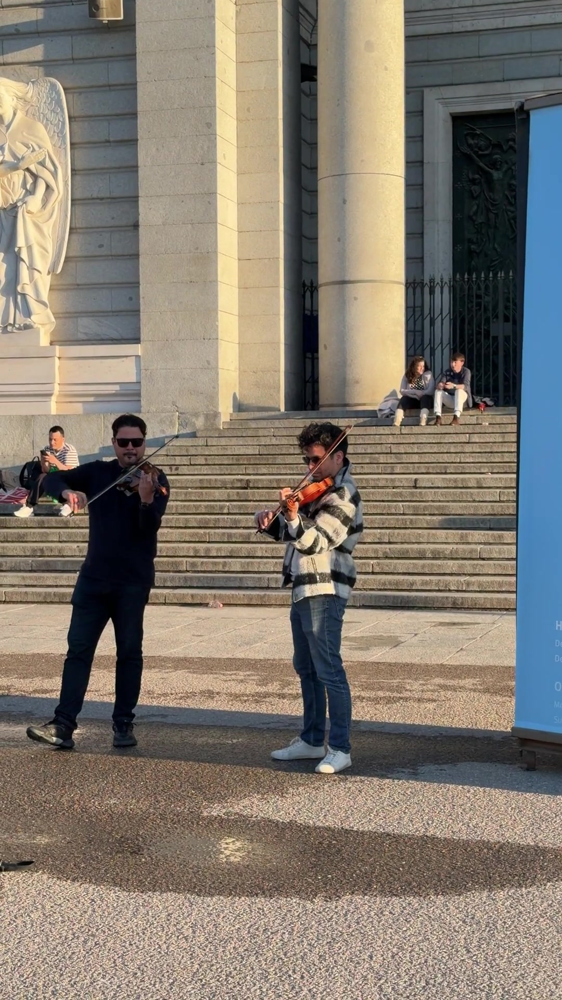
教堂前街頭表演 · 7 秒紀錄馬德里傍晚的歡樂氛圍
沒想到的彩蛋:
原本只是想出來消化晚餐,結果走 10 分鐘看到 3 場傳統表演——
巨人 → Chotis → 街頭樂隊。
這種「沒計劃卻撞上的旅行運」, 比所有寫好的行程都珍貴 ✨
離開慶典區,沿著 Calle Mayor 往飯店方向走,經過一棟漂亮的義式建築(Istituto Italiano di Cultura · 義大利文化中心),整面牆爬滿——
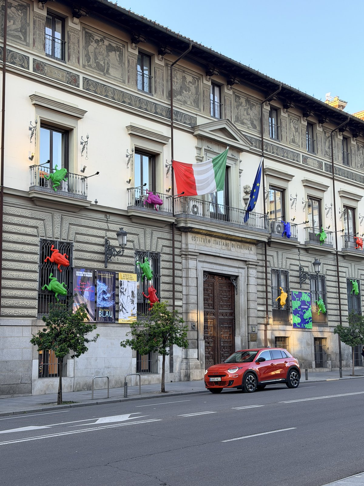
紅綠白國旗 + 多彩巨型青蛙 + 紅色 Fiat 小車 · Wes Anderson 風
整片彩色巨型青蛙!這是義大利藝術團體 Cracking Art 的裝置——他們 1993 年成立,招牌就是用回收塑膠做亮色巨型動物(青蛙、烏龜、蝸牛、企鵝),把城市古蹟變成色彩遊樂場 🎨
§ SixCracking Art 的理念:
用塑膠動物提醒大家環保 ♻️
用藝術讓老城市重新「活過來」。
馬德里這次配合義大利當代藝術週(看建築上的海報 "Festival della Poesia Italiana / Semana del Arte Italiano Contemporáneo"),把整棟新古典主義建築變成大型藝術裝置。
紅綠白義大利國旗 + 古典立面 + 多彩青蛙 + 路邊紅色 Fiat ——
整張照片像 Wes Anderson 電影截圖 🎬
沿著皇宮東側的 Calle de Bailén 繼續往西走,黃昏的光把整條街染成蜂蜜金色。
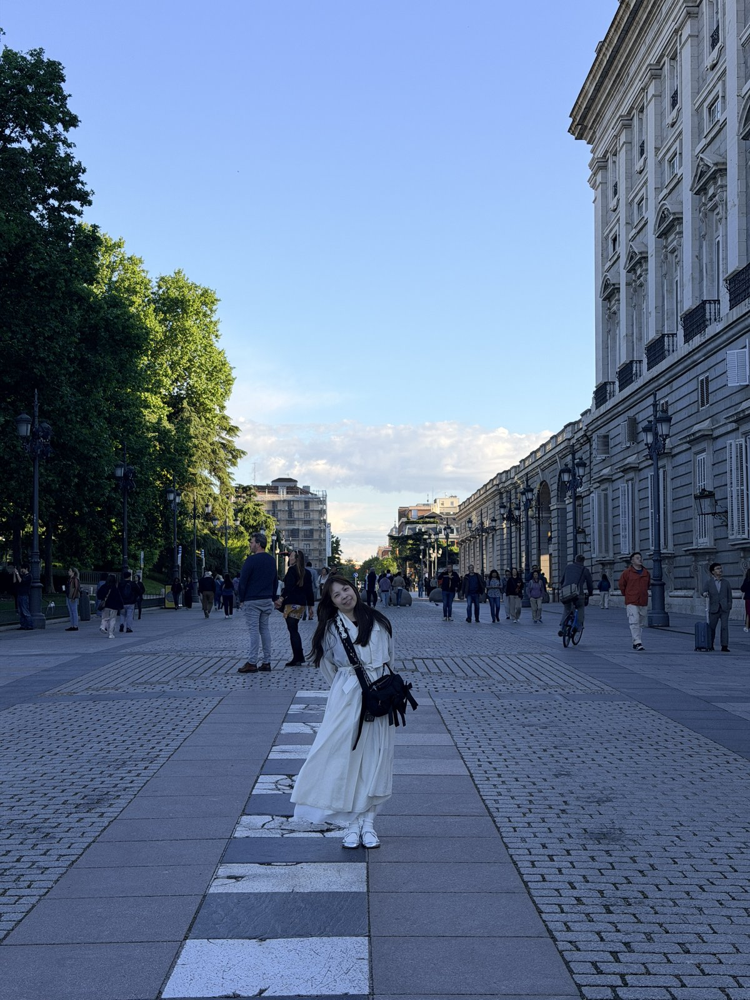
Calle de Bailén · 米色洋裝 + 米色皇宮 · 整張同色系
走到 Plaza de Oriente(東方廣場)邊邊,意外撞見一隻 真正的孔雀 在剛下過雨的石板路上散步 —— 逆光剪影 + 水窪倒影 + 孔雀尾羽。
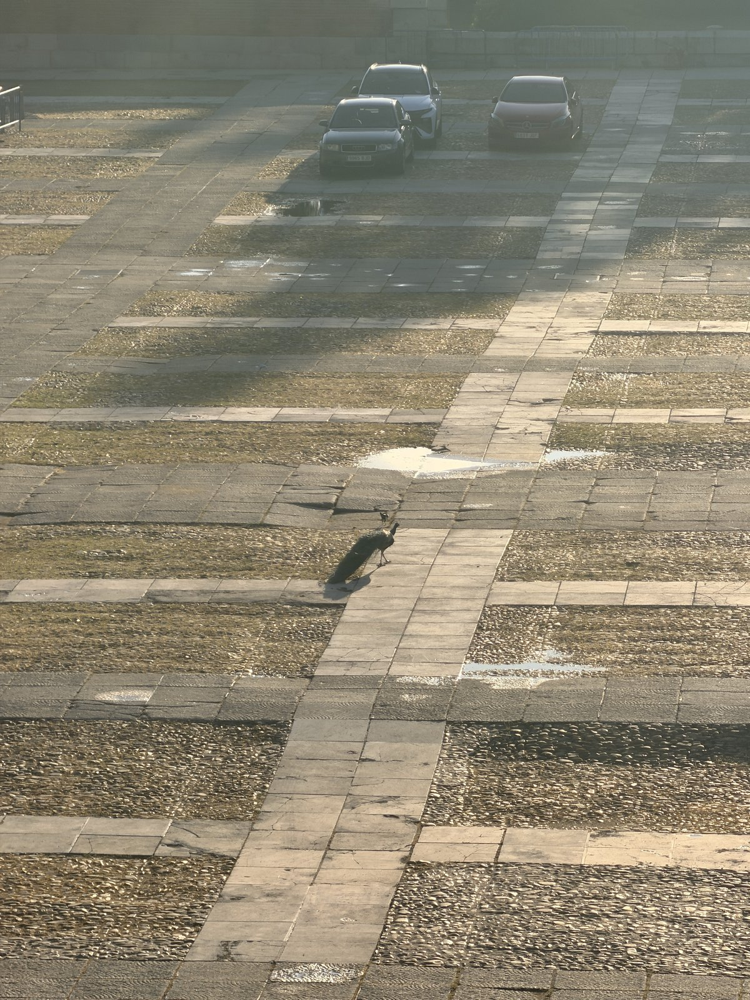
金色時刻 + 濕石板 + 孔雀剪影 · 皇宮裡跑出來放風的
馬德里冷知識:
皇宮御花園(Campo del Moro)裡有一群放養的孔雀,
偶爾會晃出來逛大街、踩水窪、跟觀光客對看。
一隻孔雀 = 馬德里給的隱藏限定彩蛋 🎁
繼續往南走 50 公尺,就是馬德里的主教座堂 —— Catedral de la Almudena。
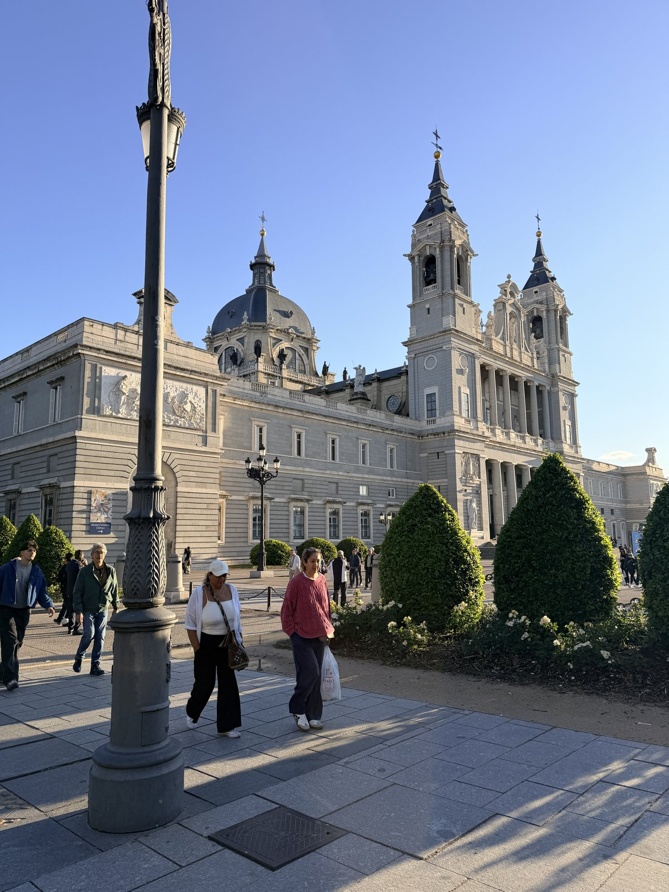
藍灰圓頂 + 兩座白色鐘塔 · 教堂北側
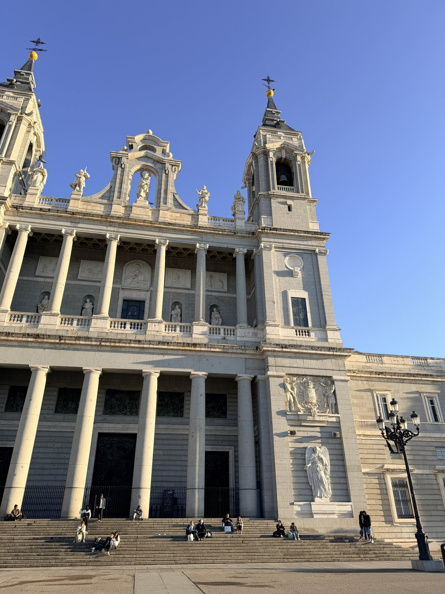
正門 + 聖母 La Almudena 雕像 + 西班牙王室紋章
§ Seven這座教堂的冷知識:
✦ 蓋了 110 年才完工 —— 1879 動工,1993 才由教宗若望保祿二世祝聖
✦ 雖然外觀古典,實際上比 101 大樓還新 😱
✦ 2004 年國王 Felipe VI 跟 Letizia 王后就是在這裡結婚的 👰🤵
馬德里當首都當了 400 多年才有自己的大教堂 ——
西班牙人,你們是不是不太著急?
教堂北側有一個容易被忽略的隱藏景點——「Museo Catedral · Cúpula →」的指示牌,順著爬上去就是主教座堂圓頂觀景台。買票進去,電梯 + 一段樓梯,就上到屋頂。
往西看,遠處綠色那一大片 = Casa de Campo —— 馬德里最大的城市公園,比紐約中央公園大五倍!原本是西班牙王室的狩獵場 🌳
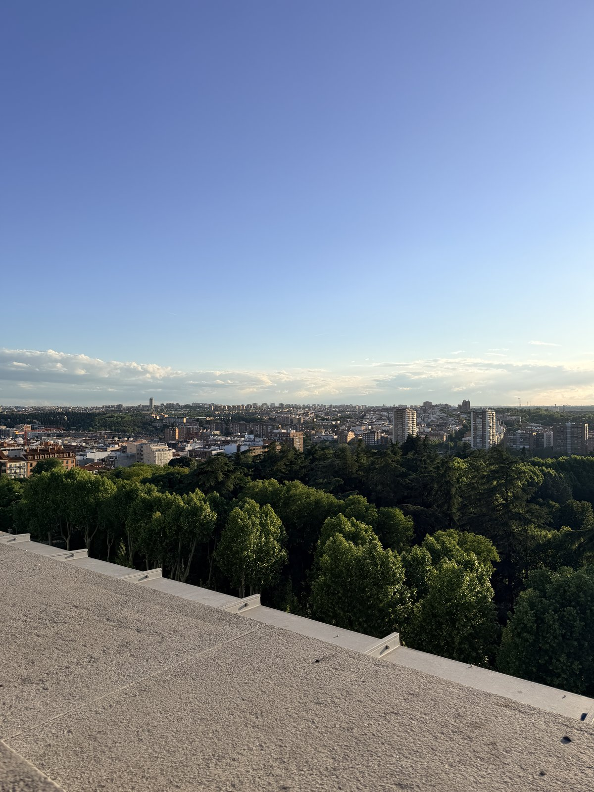
Casa de Campo 綠帶 + 遠方天際線 · 馬德里最大公園
正下方延伸出去的綠帶 = Campo del Moro 御花園(剛才那隻孔雀的家 🦚 從上面看就懂了)。
媽媽白色長洋裝,長髮在風裡,夕陽從右側打進來,影子斜斜落在水泥圍牆上,馬德里全景在腳下 ——
白洋裝 + 長髮 + 夕陽 + 馬德里全景 · Day 4 完美收尾
§ Eight馬德里冷知識 No.2:
馬德里海拔 667 公尺,是歐洲首都裡海拔最高的!
所以天際線特別清晰、夕陽特別乾淨 ——
不是 IG 濾鏡,是真的地理優勢 ☀️
從 Almudena 走回飯店,正好穿過 Plaza de España(西班牙廣場)—— 飯店就在廣場邊。
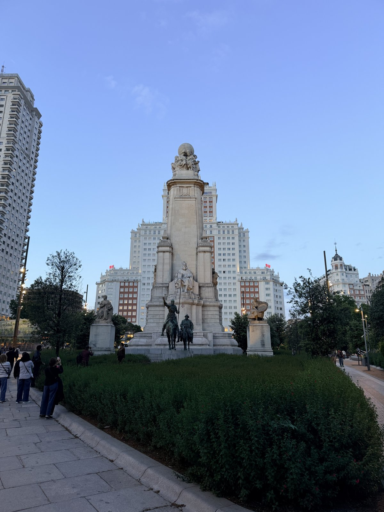
塞萬提斯紀念碑 + 唐吉訶德 + 桑丘 · 飯店家門口
中央就是 Monumento a Cervantes(塞萬提斯紀念碑),致敬西班牙文學之神 Miguel de Cervantes(1547–1616),《唐吉訶德》的作者。
下方青銅雕像:
🛡️ 騎瘦馬、舉長矛的瘦騎士 = Don Quijote
🐴 騎驢、矮矮胖胖的隨從 = Sancho Panza
👩🌾 兩側白色石像 = Dulcinea(唐吉訶德幻想中的「公主」)+ Aldonza(現實版農婦)
頂端那個地球儀象徵《唐吉訶德》被翻譯成全世界語言 —— 史上印量第二的書,僅次於聖經 📚🌍
我們等於是「住在唐吉訶德旁邊」 🛡️📖
飯店那棟超高樓 = Torre de Madrid(1957 年蓋的,當時歐洲最高樓之一)。
後面的白色巨型建築 = Edificio España(現在的 RIU 飯店)。
Plaza de España = 我們這四天的私人後花園。
廣場一角還有一間玻璃溫室造型的咖啡館 —— Café de Cervantes(當然是致敬塞萬提斯)。整圈攀爬植物 + 戶外白色座椅,馬德里 2021 年廣場大改造後的新地標 ☕
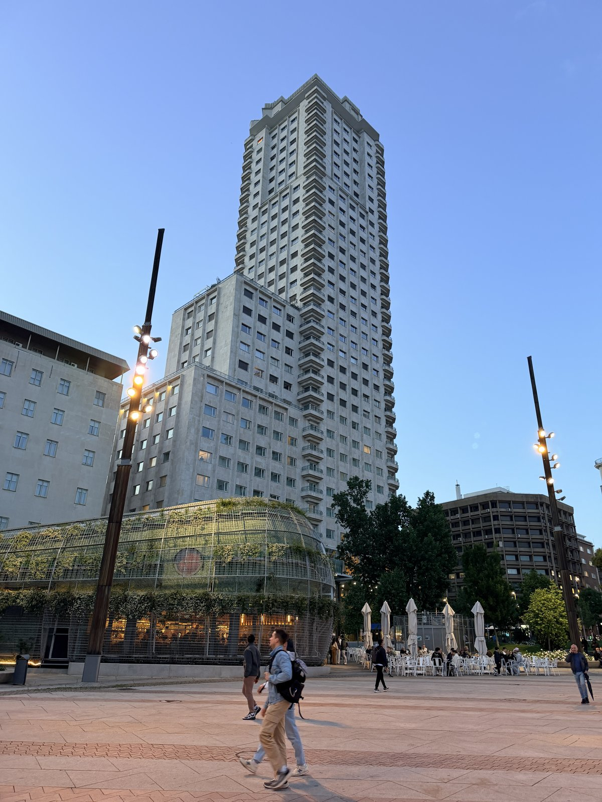
玻璃溫室 + 攀爬植物 · 飯店後方的 Torre de Madrid
§ Nine回到房間,洗澡、換尿布、開箱超市買的水果。小米光著小腳丫站在地板上,捧起一整盒覆盆子(西班牙文 frambuesas),開始認真挑哪一顆要吃。
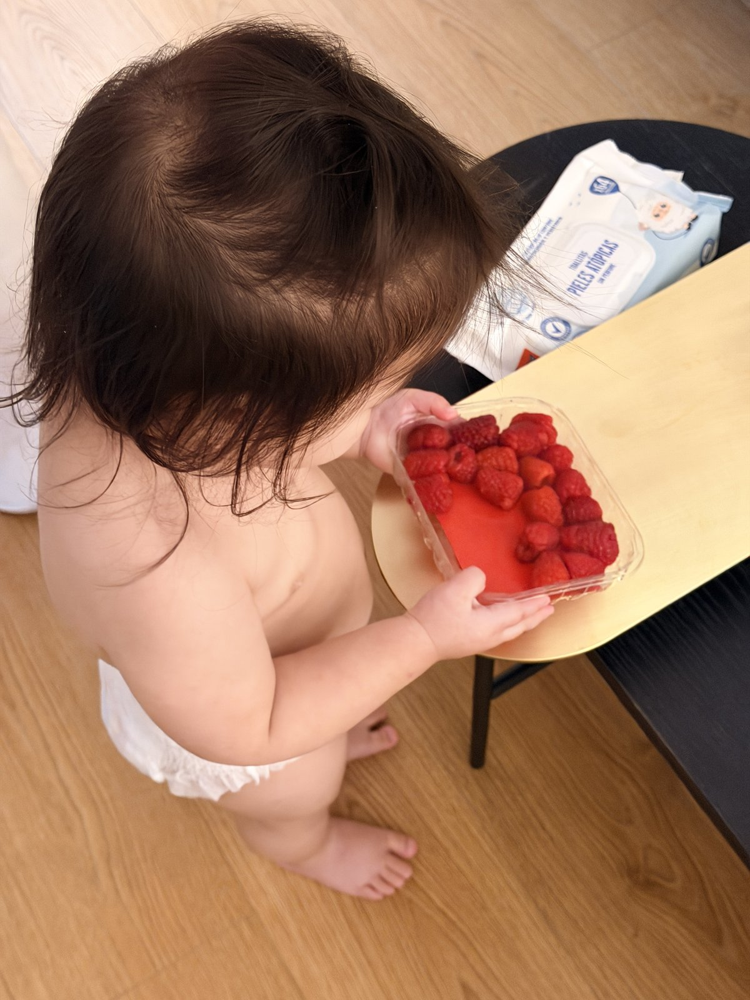
光屁股小公主 + 一整盒覆盆子 · Day 4 的收尾
西班牙覆盆子的小驚喜:
一盒 €2–3,在台灣同樣大小要 NT$150–300 😅
5 月當季最甜,西班牙是歐洲主要產地之一。
小米對這一盒愛不釋手,
整晚的火車奔波 + 飯店探險 + 設計椅放電 ——
最後收尾在一盒覆盆子的滿足感裡 ✨
☾ 待續 · 馬德里 Day 5